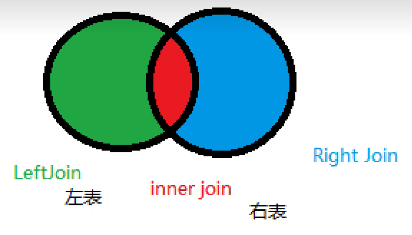
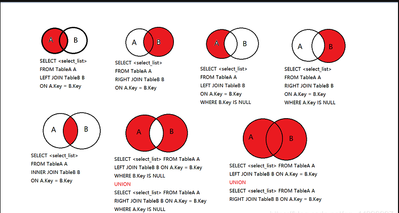

Mysql Cheat Book
·
nanpangyou
Mysql cheat book
- 链接数据库退出链接
mysql -u root -p
# 或者显示输入密码
mysql -u root -p 123456
# 退出
exit
update mysql.user set authentication_string=password('123456') where user='root'; --修改密码
flush privileges; --刷新权限
-------------------------------------------
-- 所有的语句要以分号结尾
show databases; --查看所有数据库
use 数据库名; --切换数据库
show tables; --查看当前数据库的所有表
describe 表名; --查看表结构
create database 数据库名; --创建数据库
drop database 数据库名; --删除数据库
- 一些名词
| 名词 | 说明 |
|---|---|
| DDL | 数据定义语言，用于定义数据库对象，如表、索引、视图等 |
| DML | 数据操作语言，用于对数据库中的表进行增删改查 |
| DCL | 数据控制语言，用于对数据库的访问权限进行控制 |
| TCL | 事务控制语言，用于对事务进行控制 |
- 操作数据库
注意： mysql中的关键字不区分大小写
3.1 创建数据库
create Database [if not exists] 数据库名;
3.2 删除数据库
drop database [if exists] 数据库名;
3.3 使用数据库
use `数据库名`;
select `user` from student -- 使用反引号可以避免关键字冲突
3.4 查看所有的数据库
show databases;
- 数据库的列类型
4.1 数值
- tinyint：1字节，-128~127(十分小的数据)
- smallint：2字节，-32768~32767(较小数据)
- mediumint：3字节，-8388608~8388607(中等数据)
- int: 4字节，-2147483648~2147483647(一般数据)(常用)
- bigint：8字节，-9223372036854775808~9223372036854775807(大数据)
- float：4字节，单精度浮点数
- double：8字节，双精度浮点数
- decimal：可变长度，精确的小数(字符串形式的浮点数， 金融计算用)
4.2 字符串
- char：固定长度，不足的用空格补齐 0-255
- verchar：可变长度，最大长度为65535(常用)
- tinytext：最大长度为255(微型文本)
- text：最大长度为65535(文本)
4.3 日期时间
- date：日期，格式为：YYYY-MM-DD
- time：时间，格式为：HH:MM:SS
- datetime：日期时间，格式为：YYYY-MM-DD HH:MM:SS(常用)
- timestamp：时间戳, 1970-01-01 00:00:00到现在的毫秒数(常用)
- year：年，格式为：YYYY
4.4 null
- 没有值，未知
- 不要使用Null来表示空字符串，应该使用空字符串
- 数据库的字段属性
Unsigned
- 无符号，只能存储正数
- 声明了该列不能为负数
zerofill
- 用0填充，不足的用0补齐
- 用于数值类型
auto_increment
- 自增，每次插入数据时，自动加1
- 通常用于主键
- 可以自定义主键的起始值和步长
NULL & not NULL
- NULL：可以为空, 默认值为NULL
- not NULL：不可以为空
default
- 默认值
- 创建表
create table [if not exists] 表名(
`id` int(4) not null auto_increment comment 'id',
字段名1 数据类型 [属性1] [属性2] ...,
字段名2 数据类型 [属性1] [属性2] ...,
字段名3 数据类型 [属性1] [属性2] ...,
...
[primary key(字段名1, 字段名2, ...)], -- 主键
[unique(字段名1, 字段名2, ...)], -- 唯一约束
[foreign key(字段名1, 字段名2, ...) references 表名(字段名1, 字段名2, ...)], -- 外键
[check(字段名1 > 字段名2)] -- 检查约束
);
显示表的结构,建表语句
show create database 数据库名
show create table 表名
DESC 表名
- 修改，删除表
-- 修改表名
ALTER TABLE 旧表名 RENAME AS 新表名
-- 添加字段
ALTER TABLE 表名 ADD字段名 列属性[属性]
-- 修改字段 :
ALTER TABLE 表名 MODIFY 字段名 列类型[属性]
ALTER TABLE 表名 CHANGE 旧字段名 新字段名 列属性[属性]
-- 删除字段 :
ALTER TABLE 表名 DROP 字段名
-- 删除表
DROP TABLE [IF EXISTS] 表名
-- IF EXISTS为可选 , 判断是否存在该数据表
-- 如删除不存在的数据表会抛出错误
- DML（数据库操作语言）
- insert
insert into 表名(字段名1, 字段名2, ...) values(值1, 值2, ...);
-- 如果不写表的字段名，那么就要按照表的字段顺序插入数据
- update
update 表名 set 字段名1=值1, 字段名2=值2, ... where 条件;
where 后面常见的表达式
=, !=, <>, >, <, >=, <=, between, in, like, is null, is not null
例如
update xx set name = 'name' where id between 3 and 5;
- delete
delete from 表名 where 条件;
-- 如果不写where条件，那么就会删除表中的所有数据
-- turncate 完全删除表中的数据，不会删除表结构,索引
turncate table 表名;
delete 和 turncate 的区别
- 相同点：都能删除数据，都不会删除表结构
- 不同：
- TRUNCATE 重新设置自增列 计数器会归零
- TRUNCATE 不会影响事务
- DQL(数据查询语言)
-- select 语法 （关键字的顺序不能变）
select 字段名1, 字段名2, ...
from 表名
where 条件
group by 字段名
having 条件
order by 字段名
limit 0, 10;
-- 查询版本
select version()
-- 做计算
select 100*3+1 as '计算结果'
-- 查询自增的步长
select @@auto_increment_increment
9.1 查询所有字段
select * from student;
select studnetNo from student;
-- as 别名 （可以给字段起别名，也可以给表起别名）
select studentNo as '学号' from student as s;
-- 可以结合函数使用
select concat('学号：', studentNo) from student;
9.2 去重
select studentno from result;
-- 发现重复数据
-- 去重
select distinct studentno from result;
9.3 where 条件查询
| 条件表达式 | 语法 | 说明 |
|---|---|---|
| = | where 字段名 = 值 | 等于 |
| and && | a and b a && b | 且 |
| or || | a or b a || b | 或 |
| not ! | not a !a | 非 |
9.4 模糊查询
-- like
-- 查询名字里带 红 的 %代表任意个字符， _代表一个字符
select student_name from student where student_name like '%红%'
select student_name from student where student_name like '_红'
-- in (具体的一个或者多个值)
select studentNo from student where studnetNo in (1001,1002,1003)
9.5 联表查询
join  
-- 自连接（父子关系）
select * from t_b_industry a, t_b_industry b where a.parentid = b.id;
-- 参加高等数学-3考试的同学信息： 学号，学生姓名，科目名，分数
select s.studentno as '学号', s.studentname as '学生姓名', sub.subjectname as '科目名', r.studentresult as '分数' from result r
left join student s
on r.studentno = s.studentno
left join subject sub
on r.subjectno = sub.subjectno
where sub.subjectname = '高等数学-3';
9.6 排序和分页
-- 排序
order by 字段 asc/desc
-- asc 升序
-- desc 降序
-- 分页
-- limit 起始的位置, 每页显示的条数
-- 第n页：limit (n-1)*pageSize, pageSize
limit 0, 10;
9.10 自查询
where (这个值是计算出来的) 本质： 在where中嵌套一个select语句
where (select * from )
select studentno as '学号', r. subjectno as '科目变好', studentresult as '成绩' , subjectname as '科目名称' from result r, subject a
where r.subjectno = a.subjectno
and r.subjectno = (select sub.subjectno from subject sub where sub.subjectno = '1')
order by studentresult desc ;
9.11 MySQL函数
9.11.1 常用函数
-- 数学运算
select ABS(-10) as '绝对值';
select ceil(10.1) as '向上取整';
select floor(10.1) as '向下取整';
select rand() as '0-1间的随机数';
select round(10.1) as '四舍五入';
select sign(-10) as '正数返回1，负数返回-1，0返回0';
-- 字符串函数
select char_length('abc') as '字符长度';
select concat('a', 'b', 'c') as '拼接字符串';
select replace('abc', 'a', 'b') as '替换字符串';
select insert('abc', 1, 1, 'b') as '插入字符串';
select lower('ABC') as '转小写';
select upper('abc') as '转大写';
select instr('abc', 'a') as '查找字符串';
select replace('abc', 'a', 'b') as '替换字符串';
select substring('abc', 1, 2) as '截取字符串';
select substr('abc', 1, 2) as '截取字符串';
select reverse('abc') as '反转字符串';
-- 日期函数
select current_date() as '当前日期'; -- 2020-03-30
select current_time() as '当前时间'; -- 15:30:00
select curdate() as '当前日期'; -- 与current_date()相同
select now() as '当前日期时间'; -- 2019-11-11 11:11:11
select curtime() as '当前时间'; -- 与current_time()相同
select localtime() as '本地时间';
select sysdate() as '系统当前日期时间'; -- 2019-11-11 11:11:11
select year(now()) as '年';
-- 系统
select system_user() as '系统用户';
select user() as '当前用户';
select version() as '版本';
9.11.2 聚合函数
```sql
-- 聚合函数
count() -- 计算个数
sum() -- 求和
avg() -- 求平均值
max() -- 求最大值
min() -- 求最小值
-- 这三个都可以统计总数
select count(*) as '总人数' from student; -- count(*)
select count(1) as '总人数' from student; -- count(1)
select count(studentno) as '总人数' from student; -- count(字段)
-- count(字段), 回忽略所有null值
-- count(*), 不会忽略null值
-- count(1), 不会忽略null值
-- count(1)貌似快一点
select sum(studentresult) as '总分' from result;
select avg(studentresult) as '平均分' from result;
-- group by 分组
-- 查询不同课程的平均分，最高分，最低分
-- where 后面的条件在分组之前执行
-- having 后面的条件在分组之后执行
select subjectname as '科目名称', avg(studentresult) as '平均分', max(studentresult) as '最高分', min(studentresult) as '最低分' from result r, subject s
where r.subjectno = s.subjectno
group by subjectname;
select subjectname as '课程', avg(studentresult) as '平均分',max(studentresult),min(studentresult)
from result r, subject s where r.subjectno = s.subjectno
group by s.subjectno
having 平均分 > 80;
```
- 事务
要点： 要么都成功，要么都失败
将一组SQL放在一个批次中执行
事务原则： ACID原则 原子性，一致性，隔离性，持久性
--mysql 是默认开启事务自动提交的
set autocommit = 0; -- 关闭事务自动提交
set autocommit = 1; -- 开启事务自动提交
-- 手动处理事务
-- 开启事务
start transaction;
insert xxxxx
insert xxxxx
-- 提交事务
commit;
-- 回滚事务
rollback;
-- 事务结束
set autocommit = 1; -- 开启事务自动提交
-- 了解一下
savepoint sp1; -- 设置保存点
rollback to sp1; -- 回滚到保存点
relase savepoint sp1; -- 删除保存点
-- 过程
关闭自动提交 -> 开启事务 -> 执行sql -> 提交事务 -> 开启自动提交
- 索引
索引是一种特殊的文件，它的结构与数据文件的结构类似，但是索引文件中存储的是数据的地址，而不是数据本身。帮助MySQL高效获取数据。
索引的分类
- 主键索引
- PRIMARY key
- 唯一的标识，主键不可重复，只能有一个列作为主键
- 唯一索引
- UNIQUE key
- 避免重复的列出现，唯一索引可以重复，多个列都可以标识为唯一索引
- 普通索引
- key(index)
- 默认的，index/key关键字来设置
- 全文索引
- FULLTEXT key
- 用于全文检索，只能对char，varchar，text类型的列进行索引
- 在特定的数据库引擎中才支持，比如MyISAM，InnoDB不支持
-- 创建索引
create index 索引名称 on 表名(列名);
-- 显示索引
show index from 表名;
-- 修改索引
alter table 表名 add index 索引名称(列名);
-- 删除索引
drop index 索引名称 on 表名;
-- explain 分析sql执行的状况
explain select * from student;